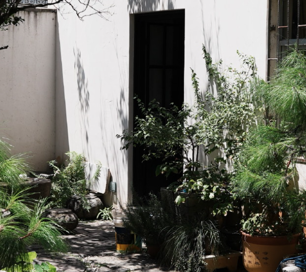
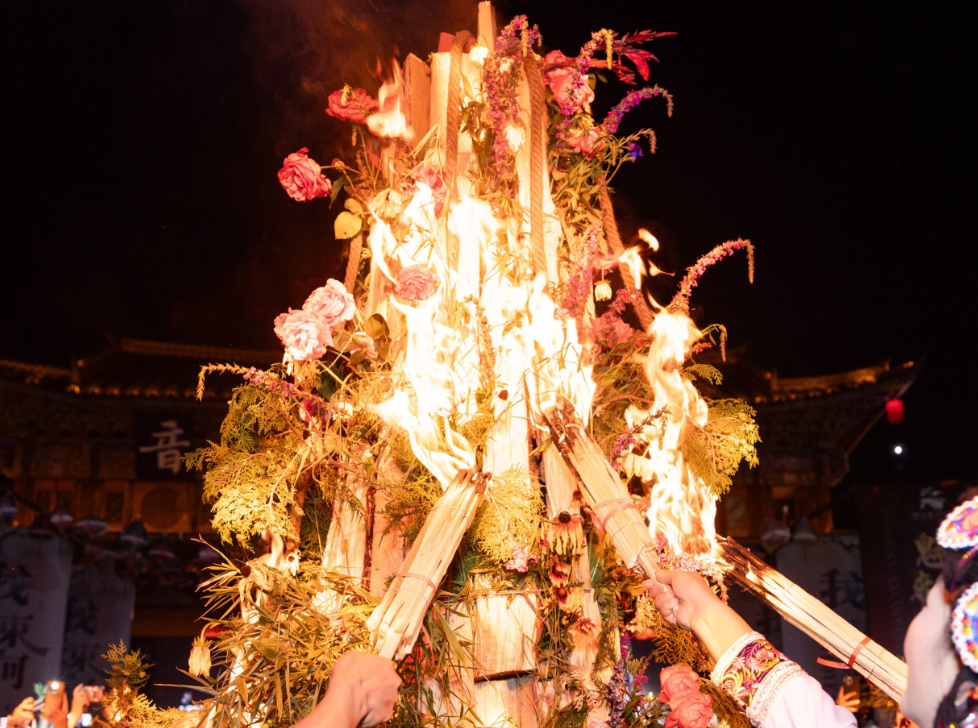
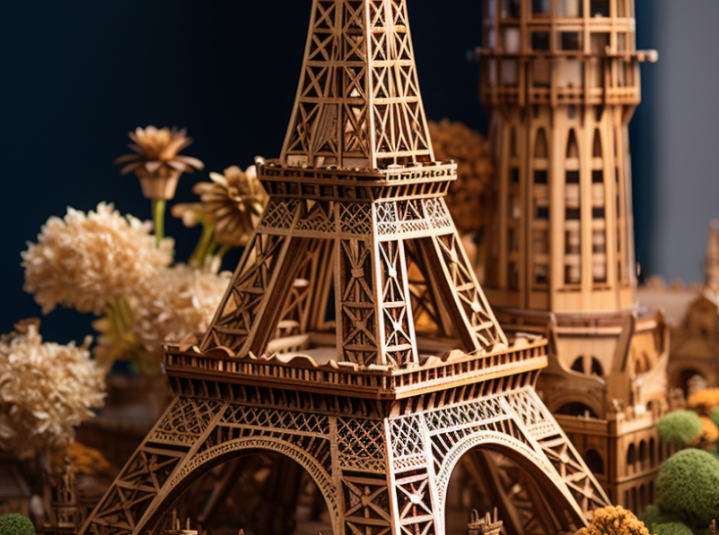

The Bai People
The Bai People
A Living Heritage
The Bai ethnic group is the largest minority in Dali, with a population of over 1.8 million. Their history stretches back more than two thousand years, and they have developed a rich and distinctive culture that is deeply intertwined with the land they inhabit. The Bai people are known for their architectural skills, particularly the distinctive three-course wall buildings with white walls and painted tiles that dot the landscape of Dali.
Bai women are celebrated for their exquisite embroidery and tie-dye techniques. The traditional Bai costume, featuring a white blouse, red vest, and embroidered apron, is a symbol of their cultural identity. The Bai language belongs to the Tibeto-Burman language family, though most Bai people also speak Mandarin Chinese fluently.

Festivals and Traditions
Dali is a city of festivals. The Third Month Fair, held annually in the third month of the lunar calendar, is the grandest celebration in the region. Originally a Buddhist gathering, it has evolved into a vibrant marketplace and cultural exchange lasting several days, attracting visitors from across Yunnan and beyond.
The Benzhu Festival, dedicated to local deities known as Benzhu, reflects the Bai people's unique blend of animism, Buddhism, and local folk beliefs. Each village has its own Benzhu temple, and the festivals involve elaborate ceremonies, traditional music, dance performances, and communal feasting that strengthen community bonds.

Architecture and Craftsmanship
Dali's architecture is a testament to the Bai people's artistic sensibility. The iconic Three Pagodas of Chongsheng Temple, dating back to the 9th century, exemplify the fusion of Chinese and local architectural styles. Dali Old Town itself is a living museum, with its well-preserved Ming and Qing dynasty buildings, cobblestone streets, and intricate wood carvings.
Bai craftsmen are renowned for their marble products, wood carving, silver jewelry, and tie-dye fabric known as "Zharang." The traditional tie-dye technique uses natural indigo dyes extracted from local plants, creating beautiful patterns of blue and white that have become a signature art form of the region.

"In Dali, the wind, the flowers, the snow, and the moon are not just scenery — they are the soul of a people who have lived in harmony with nature for millennia."

 Historical Milestones
Historical Milestones
109 BC — Han Dynasty Control
Dali enters Chinese historical records as part of the Han Dynasty's expansion into the southwest. The region becomes an important trade route connecting China with India and Southeast Asia.
738 AD — Nanzhao Kingdom
The powerful Nanzhao Kingdom unites the region with Dali as its capital. This kingdom becomes a major cultural and political force in Southeast Asia for over two centuries.
937 AD — Dali Kingdom
The Dali Kingdom is established by Duan Siping. For over 300 years, this Buddhist kingdom flourishes as a center of art, literature, and religious scholarship.
1274 AD — Yuan Dynasty
Kublai Khan's forces conquer Dali, integrating the region into the Mongol Empire. Marco Polo reportedly visits the area during this period.
Present Day — Cultural Preservation
Dali is recognized as a national historic and cultural city. Tourism and heritage preservation efforts ensure that its traditions continue to thrive in the modern era.